How to build a mastaba
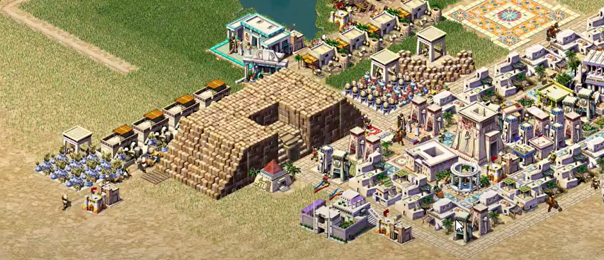
The 1999 game Pharaoh introduced step-by-step monument construction requiring various resources — a significant innovation over Caesar III, which only used coins. The game's remarkable "balance, a balance perfected down to the smallest detail."
Housing & Economy System
House levels depend on land attractiveness and goods availability. Each level requires new resource types, including services like temples and pharmacies. Through careful balancing, "one market can support a maximum of 4 mansions at the highest level."
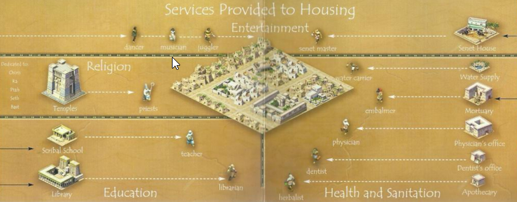
Original Rendering Approach
The original game drew the entire mastaba in a single rendering pass, caching images and handling overdraw of overlapping residents/buildings. Attempting to reverse-engineer this from the binary revealed it was excessively complex.
New Rendering Approach
Instead, the mastaba is decomposed into component parts — slanted wall, entrance, and solid wall — each rendered as an independent building following standard isometric rules. This eliminated overdraw complexity but required recalculating rotation for each part type based on map and mastaba orientation.
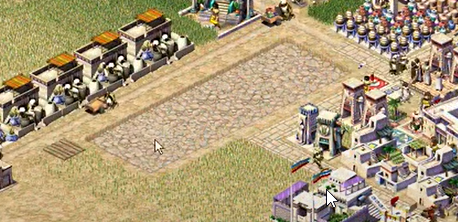
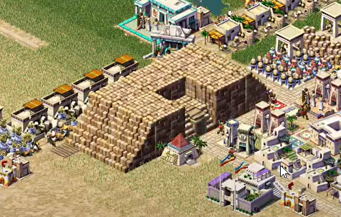
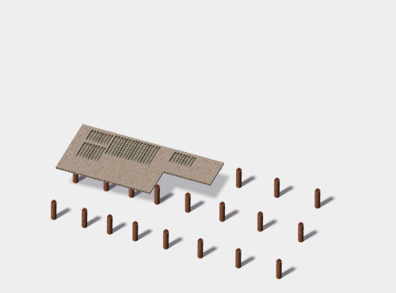
Texture Format (.sg3 / .555)
Textures use the Sierra Graphics V3 format (developed 1988 by Sierra Entertainment). The .555 files store texture data in three compression modes:
- Uncompressed — stored as raw pixel rows
- Compressed — transparent pixels encoded with run-length encoding
- Isometric — split into a rhomboid "base" part (uncompressed) and an "upper" part (compressed), with transparent diamond corners excluded to reduce size
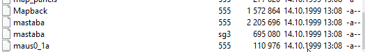
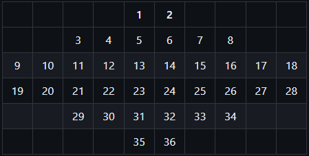
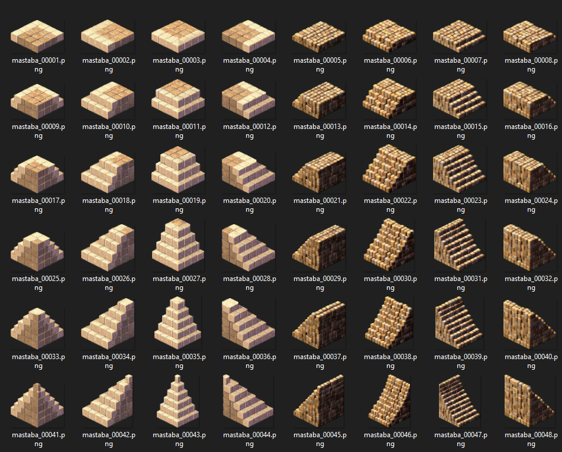
Construction Process
Building is divided into 8 stages: two site levelings and six stone-laying phases. Each segment requires 400 stones delivered from a warehouse. Edge textures line the perimeter while internal tiles use seamless stone textures.
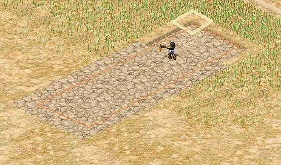
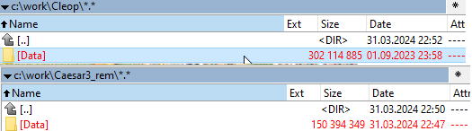
Rendering Bug Fixes
The new approach caused rendering order issues. The fix splits textures into base and upper parts — bases render first (eliminating character overlap), then upper parts overlay to properly occlude characters behind the building.
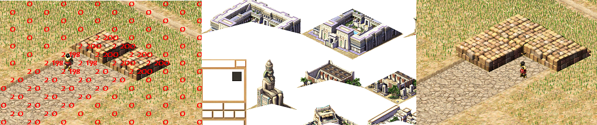
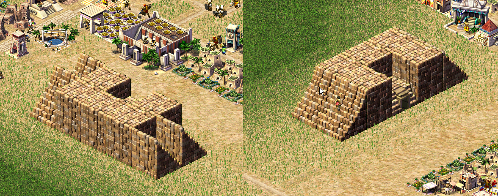
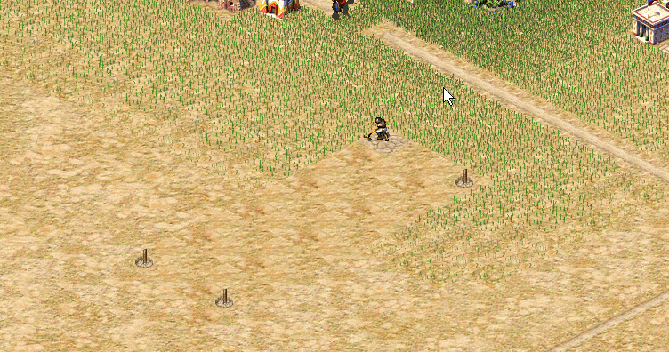
Dynamic Resource Model
Monuments function essentially as warehouses with delivery rules. Resources only appear on-site when physically carried there, adding simulation complexity but also enabling save/load exploits where "reloading the save could allow you to get that item again."
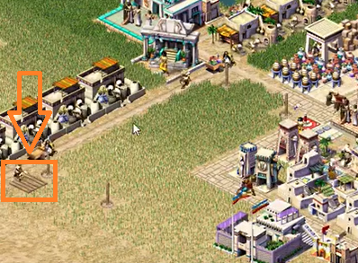
Mastaba Sizing
Mastabas can range from 2×3 to any reasonable map-appropriate size, with the example shown being 2×5.